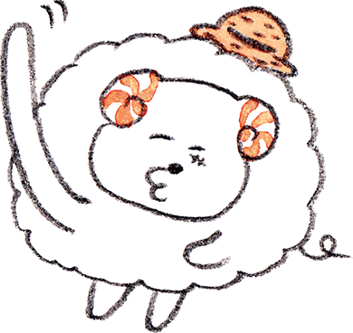
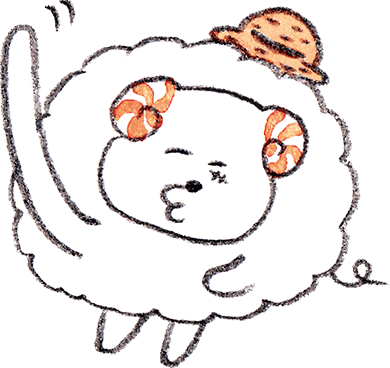

あなたの結果は…

 

「ひつじ王になる！」
そう言い切るひつじちゃんは、
どんな者にも合わせることが
できる大らかな性格の持ち主。
そう言い切るひつじちゃんは、
どんな者にも合わせることが
できる大らかな性格の持ち主。
「ひつじ王に、俺は、なる!!!」そう言い切るスーパーポジティブなひつじちゃん。おおらかで暑苦しく、いつだって根拠のない自信に満ち溢れています。基本的に人が好きで、「人間の悪意」みたいなものに鈍感です。「一度遊べばみんな仲間」ですが、人の話は基本聞いていません。よく泣き、笑い、へこんでも寝たら復活。友情、努力、勝利のヒーローです。恋愛は苦手で、極端な結論に走りやすいところがあります。裏切られると立ち直れません。
ウールのメリット伸縮性がある
ウール特有の構造であるクリンプ（縮れ）は、着用者の動きに応じてストレッチ性を発揮。弾力性も高いので、衣服の型崩れを防いでくれます。
診断結果をシェア


The Woolmark Company is the global authority on wool. Through our extensive network of relationships spanning the international textile and fashion industries, we highlight Australian wool’s position as the ultimate natural fibre and premier ingredient in luxury apparel.
The Woolmark logo is one of the world’s most recognised and respected brands, providing assurance of the highest quality, and representing pioneering excellence and innovation from farm through to finished product.
The Woolmark Company is a subsidiary of Australian Wool Innovation, a not-for-profit enterprise that conducts research, development and marketing along the worldwide supply chain for Australian wool on behalf of about 55,000 woolgrowers that help fund the company.